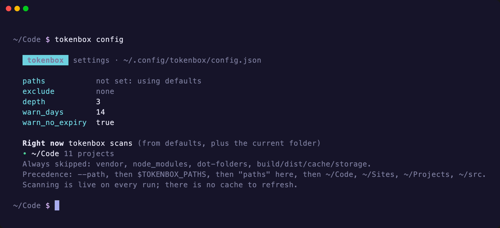

tokenbox docs
tokenbox shows every Composer credential on your machine, checks whether it still works, tells you when it expires and which projects use it, and walks you through replacing it. It is a command-line tool and a Composer plugin in one package.
Install
You need PHP 8.2 or newer and Composer 2. Install tokenbox globally so the command is on your PATH and the plugin runs inside every composer install.
tokenbox isn’t on Packagist yet, so point Composer at the GitHub repository:
composer global config repositories.tokenbox vcs https://github.com/codeeverything/tokenbox composer global config allow-plugins.tokenbox/tokenbox true composer global require tokenbox/tokenbox:dev-main
Make sure Composer’s global bin folder is on your PATH. If tokenbox isn’t found, add this to your shell profile:
export PATH="$(composer global config bin-dir --absolute -q):$PATH"
The allow-plugins line lets the Composer plugin run. Leave it out if you only want the command. You can also turn the plugin off at any time with TOKENBOX_DISABLE=1.
From a checkout
git clone https://github.com/codeeverything/tokenbox ~/Code/tokenbox cd ~/Code/tokenbox && composer install ln -s "$PWD/bin/tokenbox" /usr/local/bin/tokenbox
To try the plugin from a checkout, install it globally from a path repository:
composer global config repositories.tokenbox '{"type":"path","url":"~/Code/tokenbox"}' composer global config allow-plugins.tokenbox/tokenbox true composer global require tokenbox/tokenbox:@dev
Your first run
Run tokenbox with no arguments. It looks for Composer projects in ~/Code, ~/Sites, ~/Projects and ~/src (whichever exist) plus the current folder, reads every credential it can find, and checks each one live.

Every screenshot on this site is real tokenbox output from a demo machine. The tokens are fake and the provider APIs are stubbed; the recording scripts are in demo/.
Read it left to right: health, host, credential type, the account the token signs in as, the masked token, when it expires, which file it lives in, and which projects use it. Below the table, each problem has the command that fixes it.
If your projects live somewhere else, tell tokenbox once:
tokenbox config paths add ~/work ~/clients
tokenbox status
The default command, so tokenbox on its own runs it. Alias: ls.
- -o, --offline
- List what’s configured without contacting any provider.
- -w, --warn-days=N
- Flag tokens expiring within N days. Defaults to the
warn_dayssetting (14). - --json
- Machine-readable output. See JSON & CI.
- -v
- Also show each token’s scopes.
- -p, --path=DIR
- Scan this folder instead of the configured ones. Repeatable. Works on every command.
Health is one of:
| Badge | Meaning |
|---|---|
● ok | The provider accepted it. |
◐ 6d left | Works, but expires within warn_days. |
✕ expired | The provider reports an expiry date in the past. |
✕ invalid | The provider rejected it (HTTP 401/403): revoked, expired or wrong. |
? unverified | The host answered, but there was nothing to test the credential against. |
○ offline | The host couldn’t be reached. |
· unchecked | You ran with --offline. |
The exit code is 1 if any credential is expired or invalid, otherwise 0.
tokenbox show <host>
Everything about one credential: health, type, account, scopes, expiry, the file it’s stored in, and every project that uses it with the reason. Alias: why. If more than one credential matches the host (say a global one and a project override), you pick which.

The output has up to three lists:
- Used by: projects that need this credential, e.g. 2 repositories in composer.json: acme/checkout-sdk, acme/feature-flags.
- Also sent for API rate limits: GitHub only. Projects with public GitHub packages that would work without the token, just slower.
- Overridden by a project auth.json: projects that would use this host but have their own credential for it.
Run it before you revoke a token, so you know what will break.
tokenbox scan
Lists Composer projects and the private hosts each one needs, marked ✓ covered, ✕ missing or ○ public (the repository answered without credentials, like wpackagist.org). Projects with only public packages are hidden unless you pass --all. A project with its own auth.json is marked.

- -a, --all
- Include projects with no private hosts.
- --json
- Projects, hosts and the credentials that cover each.
tokenbox add
Guided setup for a new credential:
- Pick the provider (guessed from the host when it can be).
- Enter the host.
- Choose where to save it: globally, or in the
auth.jsonof one of the projects that needs this host. - tokenbox shows the provider’s “new token” page with the right scopes and a description filled in, and offers to open it.
- Paste the token (input is hidden). tokenbox checks it against the provider before saving.
- --provider=ID
github,github-enterprise,gitlab,bitbucket,private-packagist,forgejo,http-basicorbearer.- --host=HOST
- The host, e.g.
github.comorrepo.example.com:8443. - --project=DIR
- Save to that project’s
auth.jsoninstead of the global one. - --stdin
- Read the secret from stdin. See Scripted setup.
If the check fails you’re asked whether to save it anyway. The default is no.
tokenbox refresh [host]
Shows the current credential’s health, then runs the same guided flow as add with the provider, host and file already known, and replaces the credential in place. Aliases: renew, rotate.
For GitHub hosts, if you’re signed in to the GitHub CLI tokenbox offers to use its token instead of creating a new one. That token never expires, but it stops working if you run gh auth logout.
Refreshing doesn’t revoke the old token at the provider. If it may have leaked, revoke it from the provider’s settings page too.
tokenbox remove [host]
Removes a credential from its auth.json after you confirm. The previous file is kept as auth.json.bak. Alias: rm. Like refresh, this doesn’t revoke the token at the provider.
tokenbox config
Shows tokenbox’s settings and exactly which folders it’s scanning right now. Settings live in ~/.config/tokenbox/config.json (or $XDG_CONFIG_HOME/tokenbox/config.json, or wherever $TOKENBOX_CONFIG points). Only values you’ve changed are written.


tokenbox config paths add ~/Code ~/Sites # scan these folders tokenbox config paths remove ~/Sites tokenbox config exclude add legacy # skip any folder named "legacy" tokenbox config exclude add '~/Code/archive/*' # or a glob on the full path tokenbox config depth 4 # how deep to look (default 3) tokenbox config warn_days 30 # expiry warning window (default 14) tokenbox config warn_no_expiry false # stop flagging tokens that never expire
| Setting | Default | What it does |
|---|---|---|
paths | not set | Folders to scan for Composer projects. |
exclude | none | A folder name (matched anywhere) or a glob on the full path. |
depth | 3 | How many folders deep to look under each path. |
warn_days | 14 | Mark tokens expiring within this many days. |
warn_no_expiry | true | Flag tokens that never expire. |
Where tokenbox looks
The first of these that is set wins, and the current folder is always added:
--path <dir>on the command line (repeatable)$TOKENBOX_PATHS(colon-separated)pathsin the config file- whichever of
~/Code,~/Sites,~/Projects,~/srcexist
Every run says where it looked and why. vendor, node_modules, dot-folders and build, dist, cache and storage folders are always skipped, and symlinked folders aren’t followed. Scanning happens live on each run, so there’s no cache to refresh.
Where credentials come from
Composer reads auth from three places, and tokenbox shows all of them:
- Global:
$COMPOSER_HOME/auth.json, usually~/.composer/auth.jsonor~/.config/composer/auth.json. - Project: an
auth.jsonnext to a project’scomposer.json. It overrides the global one for that project. COMPOSER_AUTH: the environment variable. Shown, but read-only; tokenbox won’t try to edit your environment.
All the types Composer supports are understood: github-oauth, gitlab-token, gitlab-oauth, bitbucket-oauth, http-basic, bearer, forgejo-token and client-certificate.
How “Used by” is worked out
A project uses a host if its composer.json lists a repository there, or its composer.lock downloads packages from it. tokenbox show <host> gives the reason for each project, e.g. 2 repositories in composer.json: acme/private-lib, acme/billing.
GitHub is a special case. Composer sends your github.com token on every GitHub API call, so projects with only public GitHub packages still use it, but only to lift rate limits. Those are counted separately (“+10 for rate limits”) because they would still work without a token.
Project-level credentials apply only to their own project. Global credentials apply to every project that doesn’t override them.
How health is checked
Secrets are only ever sent to the host they are configured for.
| Type | Check | Expiry known? |
|---|---|---|
github-oauthgithub.com & Enterprise | GET /user: login and X-OAuth-Scopes. Warns if a classic token lacks repo. | Yes, from github-authentication-token-expiration |
gitlab-token, gitlab-oauth | GET /personal_access_tokens/self and /user | Yes, expires_at, plus revoked/active |
bitbucket-oauth | Client-credentials grant | No |
forgejo-token | GET /api/v1/user | No |
http-basic, bearerPrivate Packagist, Satis, Repman, Artifactory… | GET packages.json on the repository URL from your projects | No |
client-certificate | Reads the local certificate | Yes, validTo |
Expiry warnings
Tokens with an expiry date get a warning warn_days before they lapse (14 by default), so short-lived tokens aren’t a chore.
If the provider says a token has no expiry date (GitHub classic tokens, gh CLI tokens, GitLab tokens without expires_at), tokenbox shows never ⚠ and suggests recreating it with one. A leaked token that never expires keeps working until someone notices. Turn this off with tokenbox config warn_no_expiry false.
For http-basic and bearer credentials the expiry can’t be known, so they show unknown rather than never.
The Composer plugin
With tokenbox installed globally and allowed as a plugin, composer install, update, require, reinstall and create-project get a guard:
- Before the command runs, every repository in your
composer.jsonis checked once. - Before each download, any host not seen yet is checked. This covers mirrors, dist URLs and repositories pulled in by other packages.
If a credential is rejected or expired, or a host clearly needs one and has none, you get the guided setup instead of a failed install:
Real Composer 2.8 against a local private repository whose saved password has been revoked.
The new credential is saved to auth.json and handed to the running Composer process, so the install carries on without a restart. Credentials that are merely expiring get a one-line reminder and nothing else.
“Clearly needs one” means a GitHub Enterprise or self-hosted GitLab domain (from Composer’s github-domains and gitlab-domains), or a Composer repository whose packages.json returns 401 or 403 anonymously. Public github.com is left alone without a token, because it works anonymously.
tokenbox never stops Composer. Saying no, running with -n or in CI (where you get a one-line hint instead), or any internal tokenbox error all let Composer continue as normal. Set TOKENBOX_DISABLE=1 to turn the plugin off.
JSON & CI
tokenbox status --json is the stable contract for scripts, hooks, CI and editor integrations. It skips the spinner and colours, and keeps the exit code: 1 if anything is expired or invalid.

{
"credentials": [
{
"host": "github.com",
"type": "github-oauth",
"provider": "GitHub",
"token": "ghp_…7Qa2",
"source": { "scope": "global", "path": "/Users/sam/.composer/auth.json", "label": "global" },
"health": {
"state": "expiring",
"account": "octocat",
"scopes": ["repo", "read:org"],
"expires_at": "2026-11-17T13:00:00+00:00",
"days_left": 6,
"never_expires": false,
"detail": null
},
"used_by": [
{ "project": "acme/storefront", "dir": "/Users/sam/Code/acme/storefront",
"why": "2 repositories in composer.json: acme/checkout-sdk, acme/feature-flags, 64 locked packages download from it (mostly public)",
"rate_limit_only": false },
{ "project": "acme/admin-portal", "dir": "/Users/sam/Code/acme/admin-portal",
"why": "71 locked packages download from it (mostly public) (public; token only lifts API rate limits)",
"rate_limit_only": true }
]
}
],
"gaps": [
{ "project": "/Users/sam/Code/acme/admin-portal", "host": "nova.laravel.com" }
]
}
state is one of ok, expiring, expired, invalid, unverified, unreachable or unchecked.
Catch expiring deploy tokens in CI
Run it on a schedule in the environment that holds your deploy credentials, with a wider warning window:
# fails the job if anything is expired or invalid tokenbox status --json --warn-days=30 > tokenbox.json # also fail on anything expiring within 30 days jq -e '[.credentials[] | select(.health.state == "expiring")] | length == 0' tokenbox.json
Scripted setup
Pipe the secret in with --stdin and -n to skip prompts:
echo "$TOKEN" | tokenbox add --provider=github --host=github.com --stdin -n
For types with more than one field, pipe JSON:
echo '{"username":"token","password":"…"}' | tokenbox add --provider=private-packagist --host=repo.packagist.com --stdin -n
Security
- A secret is only ever sent to the host it’s configured for. For
http-basicandbearer, probe URLs on any other host are skipped. - Output masks every secret: the first and last four characters for long tokens, the last four for shorter ones.
- Every write keeps an
auth.json.bakand sets both files tochmod 600. tokenbox statuswarns when anauth.jsonis readable by other users.- No network calls other than the checks above. No telemetry, no account, no cache on disk.
Project auth.json files contain secrets. Keep them out of git: add auth.json to the project’s .gitignore.
Troubleshooting
A project I expected isn’t listed
Run tokenbox config to see which folders are being scanned and how deep. Raise depth or add the folder with tokenbox config paths add. Folders matched by exclude are listed with ✕.
“no projects found” next to a credential
No scanned project’s composer.json repositories or composer.lock download URLs mention that host. It may be unused, or the project lives outside your configured paths.
A credential shows “? unverified”
For http-basic and bearer, tokenbox needs a packages.json to test against. It uses the repository URLs from your projects, then https://<host>/packages.json. If neither exists, it can’t tell.
GitHub says ok but private repos still fail
A classic token without the repo scope can sign in but can’t read private repositories; tokenbox warns about this. Organisations using SAML SSO also need you to authorise the token for that organisation on GitHub.
The plugin doesn’t seem to run
Check composer global config allow-plugins includes tokenbox/tokenbox, that TOKENBOX_DISABLE isn’t set, and that you’re running interactively. Run Composer with -v to see tokenbox’s skipped checks.
Roadmap
Planned, roughly in order. Ideas and pull requests are welcome on GitHub.
Polish
tokenbox doctor: fix file permissions, de-duplicate entries shadowed by project auth, flag tokens committed to git and projectauth.jsonfiles missing from.gitignore.- Concurrent checks and a short-lived cache so
statusis instant. - Detect GitHub organisation SSO and link straight to the authorise page.
- Desktop notifications a few days before a token expires.
Real rotation
- GitLab: rotate in place via the API, with no browser trip.
- Private Packagist: create and rotate tokens via its API.
- Optionally keep secrets in macOS Keychain or 1Password and render
auth.jsonfrom them.
Dev tool integrations
composer tokenscommands from the plugin.- An MCP server so coding agents can check and help refresh credentials, returning masked values only.
- Editor status-bar items driven by
tokenbox status --json.